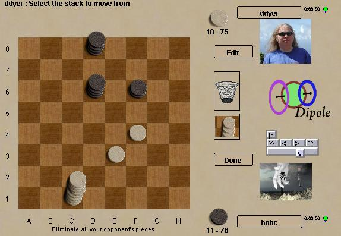

Диполь
Диполь это стопочная игра с большим упорм на тактику, придуманная
Марком Стиром. Как и все подобные игры Диполь длится конечное число
ходов и не допускает ничьих. Стопки без захватов двигаются только
вперёд, поэтому мощные ходы обычно оборачиваются Пирровыми победами.
Диполь склоняется к медленному началу, с маленькими стопками
медленно передвигающимися к центру, однако лучшие ходы применяют
большие скачки вперёд и затем захват в обратном направлении.
Боты: могут неплохо
надрать зад :)
|

|